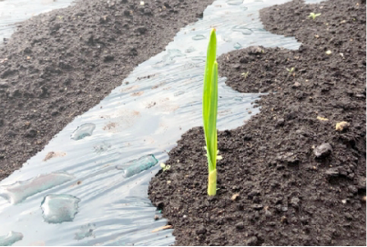
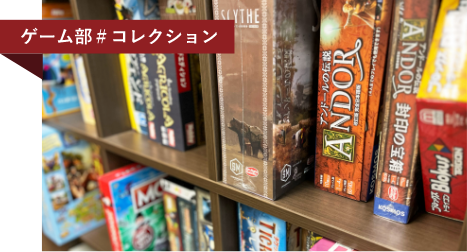
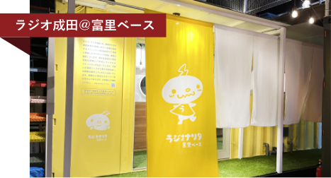
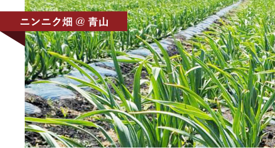

「スキルを高く。それが誰かの役に立つ。
そして評価にちゃんとつながる。」
自分を変えたいエンジニアたちへ
26 年に渡り信頼を積み上げてきました。
ユーザビリティを意識したフロントのデザイン、
利便性の高いシステム開発を武器に、
真のパートナーとしてお客様のDX推進に伴走し続けます。
私たちが選ばれる５つの理由
こんな思いを
お持ちでは
ありませんか？
▶ ▶ ▶
- 収入を上げたい
- 安定した会社で働きたい
- もっと技術力を伸ばしたい
- キャリアの相談がしたい
- マネジメントも興味がある
- 新しい環境で勝負したい
こんな思いを
お持ちでは
ありませんか？
▶ ▶ ▶
- エンジニアとして経験をつみたい
- 成長できる環境に身を置きたい
- 新しいことに挑戦したい
- 学習のアドバイスが欲しい
- もう一度挑戦したい
- 仲間が欲しい
「メンバーの成長が頼もしい」
「入社して３年、成長を実感している」
「担当業務の難易度が上がった」
「上司と飲む酒が最近うまいと感じる」
エンジニアは「技術」が大切ですが、やっぱりそこは人間ですから。
プライベートな事は相談しにくいし、職場の人間関係で悩むことだって。
キャリアを積めばその分悩みも出てきます。
そんなとき、上司や同僚だけでなく「役割等級制度」を取り入れています。
年功序列ではない、それぞれの「役割」に応じた評価・給与を明示しています。
エンジニアが心配事がなく働けるよう環境を整えてきました。
当たり前にあるものがちゃんとあります。
まだまだ不十分なところはありますが、少しづつ改善を進めています。
まずはあなたのキャリアプランを聞かせてください。
入社からプロジェクト着任までのフローが知りたい方はこちら >
公認クラブ
個性的な５つの公認クラブがあります！
５つの会社公認クラブ、その他にも公式ではありませんがメンバーを募っているクラブもあります。
各クラブそれぞれ個性的で魅力溢れる社員が活動しています。社長はフットサル部に所属し社員と一緒に汗を流しています。
その他、新事業に向けて
楽しい！面白い！！を続けていたら...
ラジオ､農業までも手掛けていました！
メディア事業
ラジオ成田（国際ラジオ放送株式会社）
2019年4月に当社による運営を開始

アグリ事業
2019年8月青森県八戸市南郷で農業を開始
SESや受託開発などの基盤事業以外に、メディア事業としてラジオ局の運営、アグリ事業として
にんにくの生産、販売と今後の展開が楽しみな事業を手掛けております。地域に密着し
サステナブルな社会形成に貢献することを目指し我々は取り組んでおります。
トピックス
私たちの日々の出来事

2023.00.00
当社の公認クラブの一つ「アナログ」ゲーム部のコレクションです。
ボードゲームがメインとなるこのクラブのボードゲームが日々増えています。
もっと見る ＞

2023.00.00
ラジオ成田は、成田と隣接する富里市と「災害時における放送に関する協定」
の締結を行いました。これを機に、富里市へ放送拠点を設置し富里市民の方々とも密着した取り組みを行って行きます。
もっと見る ＞

2023.00.00
青森県八戸市南郷地区にあるニンニク畑です。
スポンサードしているサッカーチーム「ヴァンラーレ八戸」や地元農家の方々にご協力いただき、収穫、販売を行っております。
もっと見る ＞
お知らせ
What's New
動画配信
YouTube